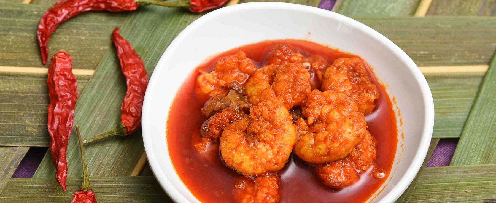

Adventour
Goan: Food and Cuisine
Goan cuisine is a unique blend of Indian and Portuguese flavors and is known for its spicy and tangy
taste. Seafood is a staple in Goan cuisine, with popular dishes including fish curry, prawn balchao, and
crab xec xec. Pork vindaloo, sorpotel, and chicken cafreal are also popular non-vegetarian dishes.
Vegetarian dishes such as xacuti, mushroom chilli fry, and bhaji pav are also widely available. Goan
cuisine also includes a variety of bread like pao, poi, and bakri which are made fresh every day.
Goan cuisine is incomplete without the famous feni, a fermented alcoholic drink made from either coconut
or cashew fruit. Other popular drinks include kings beer and port wine.
There are several popular food joints and restaurants in Goa that offer delicious Goan cuisine. Some of
the popular dishes to try in Goa include seafood platters, chicken cafreal, and pork vindaloo. The beach
shacks and food stalls in Goa also offer a variety of snacks such as fish fry, prawn pakoras, and Goan
sausage sandwiches. Overall, Goan cuisine is a must-try for anyone visiting Goa.
Fish Curry:
Goan Fish Curry is a famous and traditional dish of Goa that is made with fish cooked in a coconut
milk-based curry with a mix of spices and flavors. The curry is usually tangy and spicy and is best enjoyed
with rice or bread. The fish used in the curry can vary from pomfret, kingfish, mackerel, or any other
locally available fish. The dish is a staple in Goan cuisine and is a must-try for seafood lovers visiting
Goa.
Prawn Balchao:
Prawn Balchao is a spicy and tangy dish from Goa that is made with prawns cooked in a thick, fiery red sauce
made with a mix of spices, vinegar, and palm jaggery. The dish gets its signature tangy and sour taste from
the vinegar and the sweetness from the palm jaggery. Prawn Balchao is usually served as a side dish with
rice or bread and is a popular item in Goan cuisine. It is a must-try for seafood lovers and those who enjoy
bold and flavorful dishes.

Pork Vindaloo:
Pork Vindaloo is a famous spicy and tangy dish from Goa that originated from the Portuguese dish called
Carne de Vinha d'Alhos. The dish is made by marinating pork in a mixture of vinegar, spices, and garlic
paste for a few hours or overnight. It is then cooked with onions, more spices, and a little bit of sugar,
giving it a slightly sweet taste. The dish is usually served with rice or bread and is a must-try for those
who enjoy bold and flavorful dishes.
Sorpotel:
Sorpotel is a popular dish from Goa that is made with pork offal and meat, along with vinegar and a variety
of spices. It is a spicy and tangy dish that is traditionally served during special occasions like weddings,
Christmas, and Easter. The dish has a complex flavor profile and requires patience to prepare, as the pork
meat and offal are slow-cooked with spices and vinegar for several hours until they are tender and infused
with the flavors of the spices. Sorpotel is usually served with sannas, a type of steamed rice cake, or with
bread.
Chicken Xacuti:
Chicken Xacuti is a spicy chicken curry that is a popular dish in Goa, India. The dish is made with chicken
that is marinated in a mixture of spices, including cumin, coriander, turmeric, and chili powder, and then
cooked with a paste made from coconut, onions, garlic, and ginger. The paste is flavored with a variety of
spices, including cinnamon, cardamom, cloves, and black pepper, and the curry is finished with a dash of
vinegar to give it a tangy flavor. Chicken Xacuti is often served with rice or bread and is a flavorful and
satisfying dish.
Bebinca:
Bebinca is a popular dessert in Goa, India. It is a layered cake made from coconut milk, eggs, sugar, flour,
and ghee. The cake is baked slowly on a hot griddle or tava, with each layer added one at a time. Bebinca is
typically served during celebrations and festivals in Goa, such as Christmas and Easter. It has a rich,
sweet taste and a soft, moist texture. The cake can be enjoyed on its own or with a scoop of vanilla ice
cream.
Feni:
Feni is a popular alcoholic drink in Goa, India. It is made from fermented cashew juice or coconut toddy,
which is then distilled to produce a potent spirit. Feni has a distinct aroma and flavor, and is often
consumed on its own or mixed with other beverages to create cocktails. It is considered a part of Goa's
cultural heritage and is widely available in local bars and restaurants. Feni is also exported to other
parts of India and abroad.
Also Read